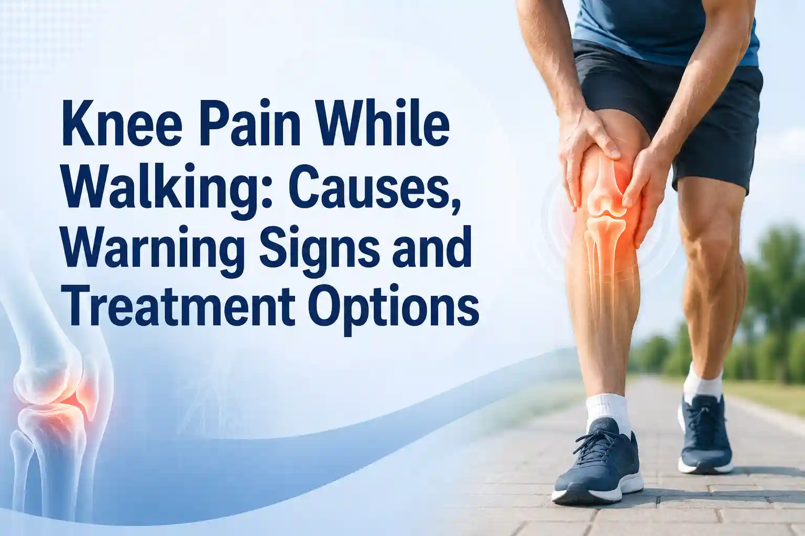

Medically Reviewed by
DR. MIR JAWAD ZAR KHANMBBS, MS - Orthopedic
M.CH-(Ortho) Joint
Replacement surgeon
Knee Pain While Walking: Causes, Warning Signs and Treatment Options
A short walk to the kitchen, a stroll in the park, or a quick trip up the stairs should not hurt. So when you feel knee pain while walking, it is your body telling you that something inside the joint needs attention. For some people the ache builds up slowly over months. For others it shows up suddenly and sharply. Either way, the pain is real, and ignoring it rarely makes it go away. This guide explains why your knee hurts when you walk, the warning signs that need a specialist, and the best knee pain treatment in Hyderabad available under senior orthopedic surgeon Dr. Mir Jawad Zar Khan.
What Happens Inside Your Knee When You Walk
Your knee is the largest joint in the body, and it carries a lot of your weight with every step. It works as a hinge between the thigh bone (femur), the shin bone (tibia), and the kneecap (patella). Between these bones sits the meniscus, a C-shaped cushion of cartilage that acts as a shock absorber. Four ligaments hold the joint steady, and a smooth layer of cartilage lets the bones glide without friction.
Walking looks gentle, but it is not effortless for the knee. Each step sends a force of roughly one and a half times your body weight through the joint, and the average adult takes several thousand steps a day. When the cartilage, meniscus, or ligaments are healthy, they absorb this load quietly. When any of these structures wear down or get injured, that same load starts to produce pain in the knee joint while walking.
Common Knee Pain Causes When You Walk
Most walking-related knee pain traces back to a handful of conditions. Where you feel the pain, on the inner side, outer side, front, or back of the knee, often points to the cause.
Knee Osteoarthritis
This is the most common cause of knee pain in adults, especially after the age of 50. As reported by Cleveland Clinic, osteoarthritis develops when the cartilage in the joint gradually wears down and the bones begin to rub together. The result is a deep ache, stiffness, and swelling that often feels worse after resting, like first thing in the morning or after sitting for a while.
Meniscus Tear
The meniscus can tear from a sudden twist or, in older adults, from simple wear and tear. A tear usually causes sharp or catching pain on the inside of the knee, and you may notice it most when you turn or pivot. Left untreated, a meniscus injury can speed up joint damage over time.
Patellofemoral Pain Syndrome (Runner's Knee)
This causes pain around or behind the kneecap, often from overuse or slight misalignment. People typically feel it when walking up or down stairs, or after sitting with the knee bent for a long time.
Bursitis and Tendonitis
Small fluid-filled sacs called bursae cushion the knee, and they can become inflamed and tender, most often just below the inner side of the joint. Inflamed tendons from repetitive activity can produce a similar nagging pain.
Ligament Injuries and IT Band Syndrome
Sprains or tears of the ACL and MCL usually follow a twist, a fall, or a sports injury, and they often make the knee feel unstable. A tight iliotibial band running down the outer thigh can also rub against the outer knee and flare up during walking.
Sudden Knee Pain While Walking: Why It Happens
Not all knee pain builds up slowly. Sudden knee pain while walking often points to a specific event inside the joint. A quick twist can tear the meniscus. A misstep can strain a ligament. A gout flare can inflame the joint within hours. In older adults with weak bones, even a minor stumble can cause a small fracture.
The key difference is timing. When sudden pain in the knee while walking comes with swelling, a locking sensation, or a feeling that the knee is giving way, it should be checked by an orthopedic specialist rather than waiting out.
Warning Signs You Should Not Ignore
Mild knee pain often settles with a few days of rest and care. But some signs mean it is time to see a doctor. According to Johns Hopkins Medicine and Mayo Clinic, you should seek medical attention if you notice any of the following:
- Knee pain that lasts longer than two weeks or keeps coming back
- Swelling, warmth, or redness around the joint
- A knee that locks, catches, or gives way when you walk
- Inability to fully straighten or bend the knee, or to bear weight on it
- A limp, or a steady decline in how far you can walk
- Pain that continues even at rest or at night, or pain with fever
A limp is easy to dismiss, but it matters. When you change the way you walk to avoid pain, you push extra stress onto your hip, back, and other knee, which can create a whole new set of problems. Getting the original issue treated early helps protect the rest of your body.
Does Drinking Water While Standing Cause Knee Pain?
This is a popular belief across many Indian households, so it deserves a clear answer. There is no scientific evidence that drinking water while standing causes knee pain or joint damage. Knee pain comes from causes like aging, injury, arthritis, excess body weight, and repeated stress on the joint, not from your posture while sipping water. Orthopedic specialists agree that the water-and-standing link is a myth.
Staying well hydrated is actually good for your joints, whether you sit or stand to drink. So if your knees hurt when you walk, the answer is not to change how you drink water. The answer is to find the real cause with a proper medical evaluation.
How to Reduce Knee Pain While Walking
If your pain is mild and there are no warning signs, these steps can bring relief and protect the joint. Think of them as first aid, not a cure for an underlying condition.
- Ease the load, do not stop moving. Shorten your walks, choose softer surfaces, and swap some walking for low-impact activity like swimming or cycling.
- Manage your weight. Every extra kilo adds several times its weight in force through the knee with each step.
- Strengthen the supporting muscles. Stronger quadriceps, hamstrings, and glutes take pressure off the joint. A physiotherapist can guide safe exercises.
- Use the RICE method for flare-ups. Rest, ice for 15 to 20 minutes, light compression with a sleeve, and elevation help settle swelling.
- Wear supportive footwear. Cushioned soles with proper arch support reduce the shock reaching the knee.
- Use over-the-counter pain relief carefully. Anti-inflammatory medicines can help for a few days, but they are not a long-term answer and should be used as advised.
If two weeks of home care does not help, or the pain returns each time you walk, it is time for a specialist to look deeper.
Knee Joint Pain Treatment Options and the Best Knee Pain Treatment in Hyderabad
The right treatment depends on the cause and how far the condition has progressed. At Germanten Hospitals, the knee joint pain treatment options range from simple non-surgical care to advanced robotic surgery, so most patients start with the least invasive path that fits their diagnosis.
Non-Surgical Treatments
Many knees can be managed without an operation. These options include structured physiotherapy, viscosupplementation and other alternative treatments such as hyaluronic acid injections, PRP and stem cell therapy for early cartilage wear, extracorporeal shockwave therapy (ESWT) for stubborn tendon pain, and cartilage repair procedures like OATS for focal cartilage damage. Targeted pain management injections can also relieve pain while other treatments take effect.
Surgical Treatments
When the joint is badly damaged or non-surgical care no longer helps, surgery restores comfortable movement. Knee arthroscopy is a minimally invasive keyhole procedure used to repair a torn meniscus or ligament. When only one side of the knee is worn, a partial knee replacement replaces just the damaged part and preserves the healthy tissue. For advanced arthritis affecting the whole joint, robotic total knee replacement in Hyderabad offers precise implant placement and a smoother recovery.
Why Patients Trust Dr. Mir Jawad Zar Khan for Knee Pain Treatment
Choosing the right surgeon matters as much as choosing the right treatment. Dr. Mir Jawad Zar Khan is a senior orthopedic surgeon with two decades of experience and a gold medal from Osmania University. He completed advanced training in the United States and Germany and is credited with introducing computer navigation and robot-assisted joint replacement to India.
His work has been widely recognized, including the Times of India award as Iconic Joint Replacement Surgeon of Telangana and a place in the Times Health Survey 2023. He leads the orthopedic team at Germanten Hospitals in Attapur, Hyderabad, where patients have access to robotic surgery, advanced imaging, and a full physiotherapy program under one roof.
Knee pain while walking is common, but it is not something you simply have to live with. Whether it started slowly or came on suddenly, finding the cause is the first step toward walking comfortably again. Simple care helps in the early stages, and advanced treatment is available when you need it.
Take the next step. If knee pain is slowing you down, do not wait for it to get worse. Book an appointment with Dr. Mir Jawad Zar Khan for the best knee pain treatment in Hyderabad and get a clear diagnosis and a plan built around your knee.
Frequently Asked Questions
Why do my knees hurt when I walk but not when I rest?
Walking loads the knee with more than your body weight, so a worn or injured joint hurts under that pressure and eases when the load comes off at rest. This pattern is very common in early osteoarthritis and meniscus problems.
Is it okay to keep walking with knee pain?
Gentle walking is usually fine and even helpful, as long as the pain is mild and there are no warning signs. Reduce the distance, avoid stairs and steep surfaces, and stop if the pain sharpens or the knee swells.
What is the best treatment for knee pain while walking?
There is no single answer, because it depends on the cause. Most people start with physiotherapy, weight management, and supportive care. If that is not enough, injections, cartilage procedures, arthroscopy, or knee replacement may be recommended after a proper diagnosis.
When should I see a knee specialist in Hyderabad?
See a specialist if your pain lasts more than two weeks, keeps returning, comes with swelling or locking, or makes you limp. Early evaluation usually means more treatment options and a better outcome.
References


DR. MIR JAWAD ZAR KHAN
MBBS, MS - Orthopedic, M.CH-(Ortho) Joint Replacement Surgeon
As the visionary Chairman and Managing Director of Germanten Hospitals, Hyderabad, Dr. Mir Jawad Zar Khan brings over two decades of surgical leadership to the field. He is dedicated to transforming lives through evidence-based treatments, advanced robotic technology, and a commitment to patient quality of life.